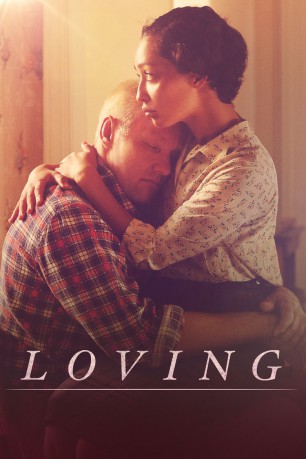
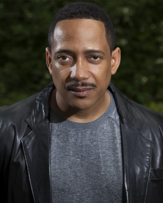

#6434 Loving
Auszeichnungen: für 1 Oscars nominiert
 
 IMDB-Wertung: 7.0 / 10
IMDB-Wertung: 7.0 / 10  Metascore: 0
Metascore: 0 
Richard (Joel Edgerton) und Mildred (Ruth Negga) sind zwei junge Leute, die sich in den 50er-Jahren in Virginia kennen und lieben lernen. Doch das Gesetz und die gesellschaftlichen Konventionen zu jener Zeit verbieten den beiden, ihre Liebe öffentlich zur Schau zu stellen, denn Richard ist weiß und Mildred Afroamerikanerin. Als die beiden sich entgegen aller Warnungen trotzdem entscheiden, zu heiraten, wird ihnen im Jahr 1958 der Prozess gemacht und beide landen für ihre Liebe im Gefängnis. Die Haft wird nur ausgesetzt, wenn sie den Bundesstaat verlassen und 25 Jahre nicht gemeinsam betreten. Doch damit gibt sich das Paar nicht zufrieden. Im Exil in Washington ziehen sie vor Gericht und verklagen den Bundesstaat Virgina, um für die Legalität ihrer Liebe zu kämpfen.
Jahr: 2016
Dauer: 123 Minuten
FSK: 6
Land: England Studio: UPITonspuren: DD5.1 - ,
Untertitel: Deutsch,
Auflösung: 1080p (1920x800) Größe: 9287 MB
Genre: Drama, Liebe, Biographie
Regisseur: Jeff Nichols
Drehbuch: Jeff Nichols
Soundtrack:
Darsteller:
 Ruth Negga als Mildred
Ruth Negga als Mildred Joel Edgerton als Richard
Joel Edgerton als Richard- Alano Miller als Raymond
- Chris Greene als Percy
- Benjamin Booker als Shotgun Shack Musician #1
- Keith Tyree als Bricklayer
 Sharon Blackwood als Lola Loving
Sharon Blackwood als Lola Loving-  Christopher Mann als Theoliver
- Mike Shiflett als Magistrate
- Winter-Lee Holland als Musiel
- Karen Vicks als Clara the Cashier
- Lance Lemon als Cousin Davis
 Marton Csokas als Sheriff Brooks
Marton Csokas als Sheriff Brooks Michael Abbott Jr. als Deputy
Michael Abbott Jr. als Deputy- Robert Haulbrook als County Clerk
 Bill Camp als Frank Beazley
Bill Camp als Frank Beazley David Jensen als Judge Bazile
David Jensen als Judge Bazile Andrene Ward-Hammond als Laura
Andrene Ward-Hammond als Laura Nick Kroll als Bernie Cohen
Nick Kroll als Bernie Cohen- Coley Campany als Secretary
- Brenan Young als Sidney, Older
- Dalyn Cleckley als Donald, Older
- Quinn McPherson als Peggy, Older
- D.L. Hopkins als Alex
 Jon Bass als Phil Hirschkop
Jon Bass als Phil Hirschkop Matt Malloy als Chet Antieau
Matt Malloy als Chet Antieau Michael Shannon als Grey Villet
Michael Shannon als Grey Villet- A. Smith Harrison als Reporter Supreme Court
- Coby Batty als Telephone Man
- Jennifer Joyner als Documentarian
 Keith Flippen als Reporter #2, Press Conference
Keith Flippen als Reporter #2, Press Conference- Darrick Claiborne als Field Hand / Drag Strip Attendee / Shot Gun Shack Attendee , uncredited
- Chris Condetti als Drag Race Spectator / Bar Patron , uncredited
- Jason Cook als Soundman , uncredited
- Brian Cutter als Court Audience Member , uncredited
- Jordan Dickey als Construction Worker , uncredited
- Lonnie M Henderson als Street Walker , uncredited
- Ken Holliday als Drag Race Spectator , uncredited
- Mark Huber als Store Pedestrian , uncredited
- Jim D. Johnston als Phil's Dad , uncredited
- Sheri Lahris als Secretary , uncredited
- James Nevins als Reporter , uncredited
- James Matthew Poole als Drag Race Spectator , uncredited
- Jasmine Shanise als Drag Race Spectator , uncredited
- Mike Stevens als Construction Worker , uncredited
- Todd Patrick Taylor als Drag Race / Construction Crew , uncredited
- Will Dalton als Virgil
- Dean Mumford als Drag Race Driver
- Terri Abney als Garnet
- Justin Robinson als Shotgun Shack Musician #2
Datei: X:\2016(G-M)\Loving (2016, FSK6, 1920x800).mkv seit 21.06.2017
Festplatte: HD 2016(A-Z)
 Es gibt insgesamt 164 Filme in der Gruppe '2016(G-M)'
Es gibt insgesamt 164 Filme in der Gruppe '2016(G-M)'